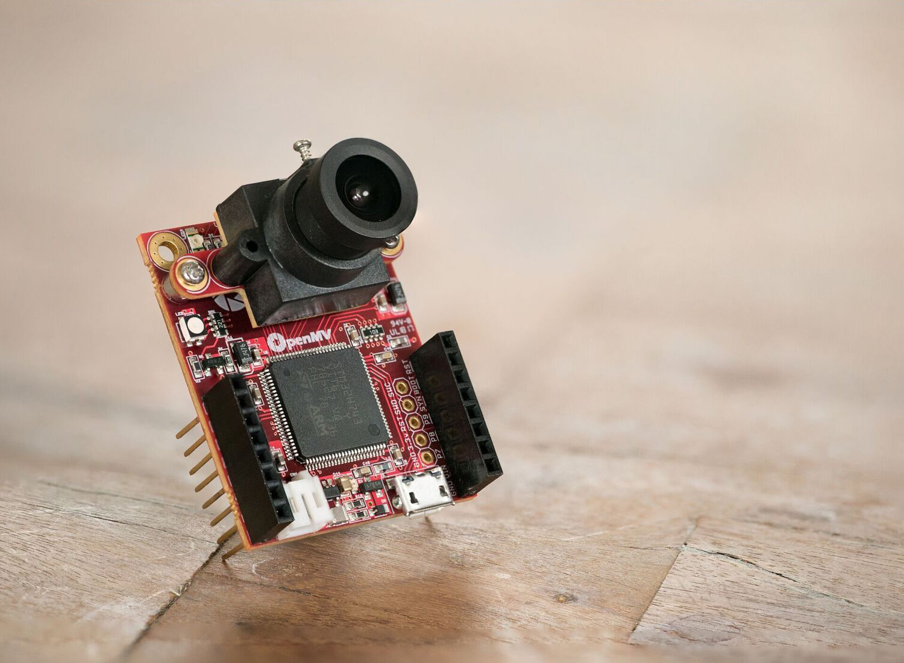

1. Pika-aloitus¶
{kind=link}

Tervetuloa – esittelemme innolla sinulle OpenMV Camin, pienen ohjelmoitavan kameran, joka ajaa Pythonia suoraan laitteella. Kirjoita muutama rivi koodia, paina käynnistä, ja kamera alkaa nähdä: tunnistaa kasvoja, seurata värejä, lukea tunnisteita, seurata viivoja – ilman PC:tä silmukassa ja ilman raskaita esiasennuksia, joiden läpi kahlata ensin.
Tämä pika-aloitusopas saa sinut käyntiin muutamassa minuutissa: asennat IDE:n, kytket kamerasi ja ajat reaaliaikaisen kasvotunnistimen aivan ensimmäisenä skriptinäsi.
1.1. Asenna OpenMV IDE¶
OpenMV IDE on työpöytäsovellus skriptien kirjoittamiseen, niiden ajamiseen kameralla ja tulosten katsomiseen reaaliajassa. Lataa se Windowsille, macOS:lle tai Linuxille täältä ja asenna se sitten:
Windows – aja asennusohjelma. Se asentaa IDE:n yhdessä kameran USB-ajurien kanssa; seuraa oletuskehotteita.
macOS – avaa
.dmgja vedä OpenMV IDE Ohjelmat-kansioon.Linux – aja
chmod +x openmv-ide-*.run && ./openmv-ide-*.runja seuraa sitten asennusohjelman kehotteita.
Muista
Automatisoituihin tai näytöttömiin (headless) asennuksiin asennusohjelmat toimivat myös komentoriviltä hiljaisen asennuksen lipuilla. Katso tarkat alustakohtaiset komennot openmv-ide README -tiedostosta.
1.2. Kytke kamerasi¶
Kytke kamera tietokoneeseesi USB-datakaapelilla. Odota, että sen asema liittyy ja sininen LED alkaa vilkkua, ja napsauta sitten yhdistä-painiketta – pistokekuvaketta työkalurivin alaosassa.
Kun yhdistät ensimmäistä kertaa, IDE vertaa kameran laiteohjelmistoa versioon, jonka mukana se toimitetaan, ja tarjoutuu päivittämään sen. Hyväksy kehote uusimman laiteohjelmiston flashaamiseksi; se kestää muutaman sekunnin, ja IDE yhdistää uudelleen itsestään, kun se on valmis.
Jos kamera ei tule näkyviin tai haluat tietää yksityiskohdat siitä, mitä yhdistäminen ja päivittäminen tekevät, katso Kameran yhdistäminen ja Laiteohjelmiston päivitykset ja palautus.
Muista
Jäitkö jumiin jonkin kanssa? Kirjoita OpenMV-foorumeille – yhteisö ja OpenMV-tiimi auttavat mielellään.
1.3. Aja ensimmäinen skriptisi¶
OpenMV Cam -kamerasi toimitetaan flash-muistissa Googlen MediaPipe BlazeFace -kasvotunnistimen kanssa. Liitä tämä skripti editoriin:
import csi
import time
import ml
from ml.postprocessing.mediapipe import BlazeFace
# Set up the camera sensor.
csi0 = csi.CSI()
csi0.reset() # Initialize the sensor to a known state.
csi0.pixformat(csi.RGB565) # Capture 16-bit colour.
csi0.framesize(csi.QVGA) # Set a small, fast frame size.
# BlazeFace was trained on square images, so crop to a centred
# square the size of the sensor's height.
side = csi0.height()
csi0.window((side, side))
# Load the built-in face detector. The post-processor turns the
# network's raw output into a list of detections; threshold sets how
# confident a detection must be to count.
model = ml.Model("/rom/blazeface_front_128.tflite",
postprocess=BlazeFace(threshold=0.4))
clock = time.clock() # For measuring the frame rate.
while True:
clock.tick()
img = csi0.snapshot() # Capture one frame.
# predict() runs the network and returns one
# ((x, y, w, h), score, keypoints) tuple per detected face.
for rect, score, keypoints in model.predict([img]):
# Draw the box around the face...
ml.utils.draw_predictions(img, [rect], ("face",),
((0, 0, 255),), format=None)
# ...and mark the six landmarks: eyes, nose, mouth, ears.
ml.utils.draw_keypoints(img, keypoints, color=(255, 0, 0))
print(clock.fps(), "fps")
Paina vihreää Run-painiketta ja suuntaa kamera kohti kasvoja. Kehyspuskurin katselin piirtää laatikon jokaisten kasvojen ympärille ja merkitsee silmät, nenän, suun ja korvat, samalla kun sarjapääte tulostaa kuvataajuuden.
Tämä skripti – ja yksi lähes jokaiselle kameran ominaisuudelle – on myös sisäänrakennettu IDE:hen kohtaan File → Examples, suodatettuna yhdistettyyn korttiisi. Avaa jokin, paina käynnistä ja ala tutkia, mihin kamera pystyy.
1.4. Mihin mennä seuraavaksi¶
Mistä aloitat, riippuu siitä, mitä jo osaat. Tutoriaalissa on kolme aloituskohtaa – Pythonissa uusi, laitteistossa uusi tai konenäköön valmis – joten valitse sinulle sopiva. Viitteet ja IDE-opas ovat täällä aina, kun tarvitset niitä.